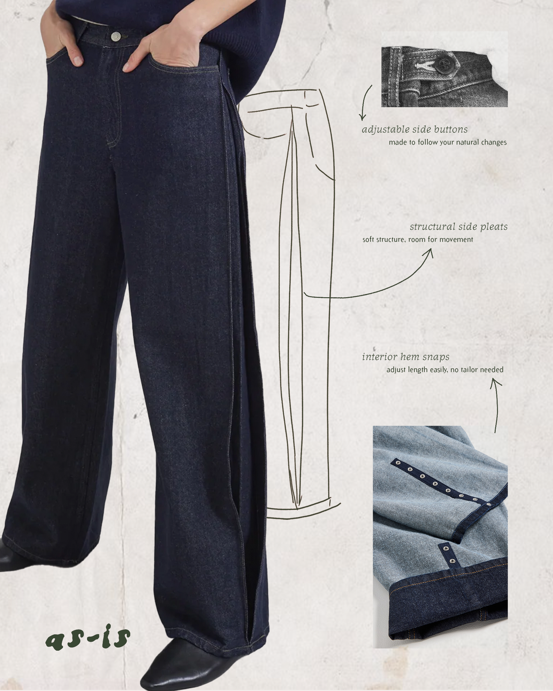
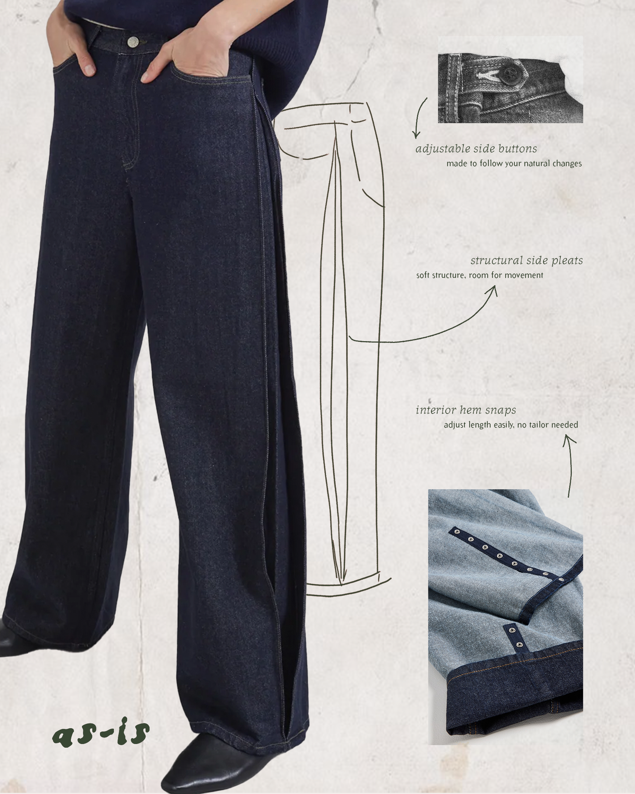

as-is A Clothing Brand Centering Fit for AFAB Bodies
How can a clothing brand respond to the frustration AFAB bodies face when masculine silhouettes are not designed to fit them?
As-Is is a fictional clothing brand I created for an academic logos and branding course. The assignment was to design a complete visual identity system for a company or concept.
As a brand, As-Is responds to the lack of well-fitting masculine-style clothing for AFAB bodies.
1. The Logo
The logo is set in Condemdhouse by House Fonts, a typeface rooted in distressed, hand-formed lettering developed in response to the raw, unpolished visual identity movement of the 1990s.
Its uneven, unsmoothed forms reinforce an approachable, human quality that aligns with As-Is’s rejection of polished, idealized aesthetics.
2. Typography
Journal by Zuzana Licko (Emigre) offers a warm, lightly irregular structure that balances readability with a human, unpolished feel.
as-is is made to fit you as you are.
Arbitrary by Barry Deck (Emigre) is a serif typeface with soft contrast and gentle irregularity, designed for readable, understated body text across the brand.
Gender-fluid style without the menswear fit.
3. Colors
4. Applications
 
